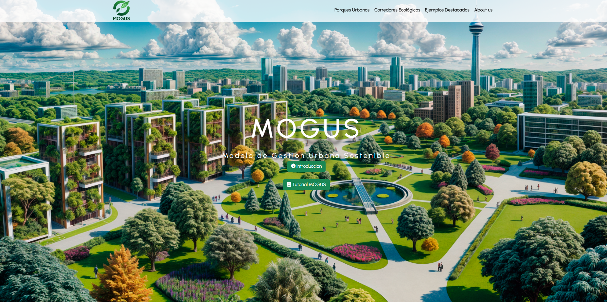

El proyecto
MOGUS es una aplicación web desarrollada como soporte técnico para un proyecto de tesis sobre construcción sustentable, de la Facultad de Arquitectura y Urbanismo de la Corporación Universitaria Americana. Permite el análisis cuantitativo de infraestructura verde urbana, evaluando proyectos bajo criterios de sostenibilidad para apoyar la planificación de ciudades más resilientes.
Funcionalidades
- Gestión completa de fases de proyecto (CRUD) para registrar y dar seguimiento al avance de cada iniciativa evaluada.
- Diagnóstico visual automático mediante gráficos interactivos generados a partir de los datos ingresados.
- Exportación de reportes tanto a Excel (con fórmulas automáticas) como a PDF con formato profesional.
- Evaluación de dos tipos de infraestructura verde: parques urbanos y corredores ecológicos.
Stack técnico
Backend en Flask (Python), base de datos MySQL, frontend con Bootstrap 5 y Chart.js para las visualizaciones interactivas, WeasyPrint para la generación de PDF, XlsxWriter para los reportes en Excel, y Matplotlib para el procesamiento gráfico de los diagnósticos.
Visualización

Créditos
Proyecto de tesis de Andrés Garzón, Facultad de Arquitectura y Urbanismo, Corporación Universitaria Americana — Modelo de Gestión Urbana Sostenible (MOGUS). Desarrollo técnico y soporte en software por Andrés Aranguren.